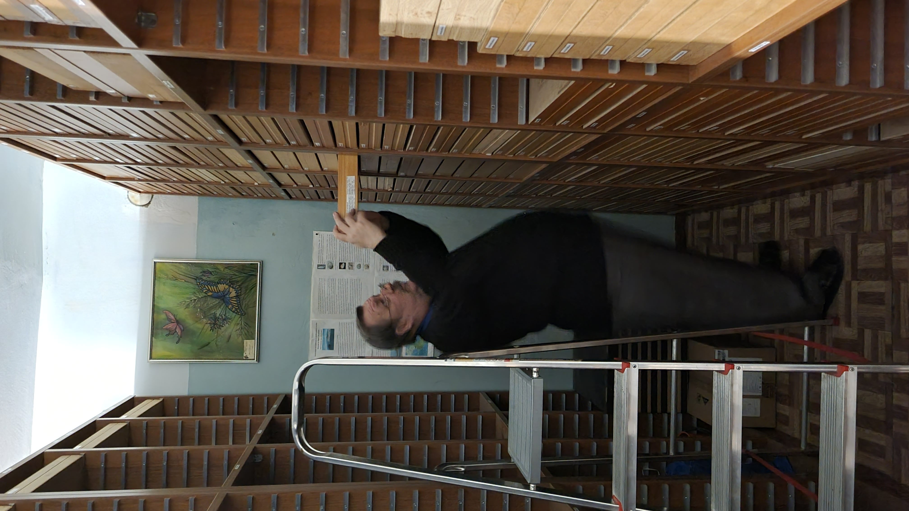
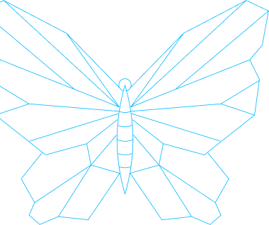
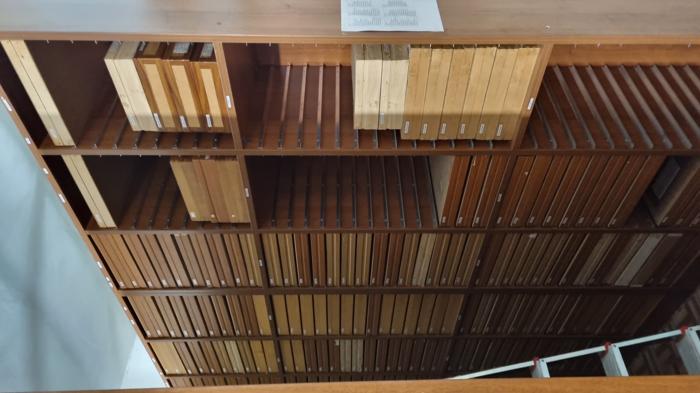
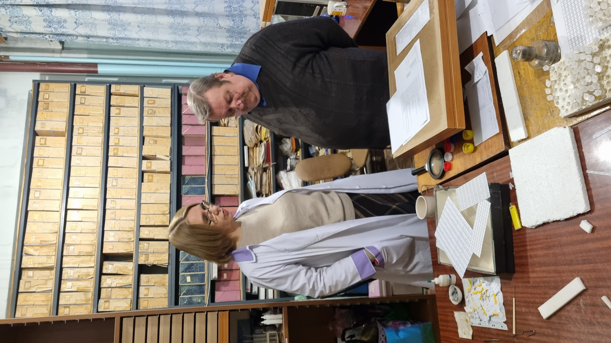
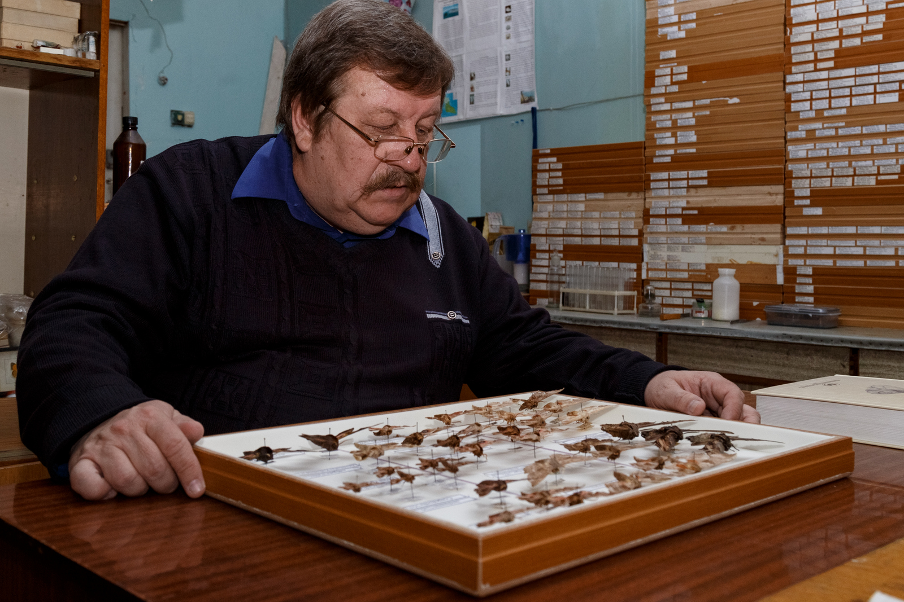

Профессор Сергей Анатольевич Сачков собирал свою коллекцию бабочек еще со
школьных лет. В шестом классе вместе с друзьями начал ловить бабочек руками и сачками - фамилия к этому
располагала. Потом заинтересовался энтомологией уже всерьез.
Сергей Сачков ловил бабочек всегда: и во время учебы в многочисленных экспедициях, и во время службы в армии
(когда за насекомыми на лесной поляне вместе с ним гонялся весь взвод), и во время работы в Самарском
университете.
Коллекцию бабочек Сергей Анатольевич пополнял и сам, и с помощью коллег, и посредством обмена. Экспедиции -
кладезь находок и открытий. В разное время профессор в поисках бабочек провел полевые сезоны в разных регионах
России - от Урала до Дальнего Востока, от Каспия до Байкала. Ловил бабочек в странах Центральной Азии и
Европы.
За годы, проведенные в поисках уникальных образцов, Сергей Сачков не раз становился первооткрывателем. Он
сделал достоянием науки и описал 20 новых видов бабочек, ранее неизвестных в мире. Один из открытых им видов
он назвал в честь жены Юлии - infurcitinea juliae.



Много лет назад коллекцию бабочек перевезли в
Самарский университет вместе
с научной библиотекой из дома Сергея Анатольевича. Тех пор в структуре Самарского национального
исследовательского университета им. академика С. П. Королева функционирует научно-исследовательская
лаборатория систематики животных и фаунистики, которую возглавляет сам профессор С. А. Сачков. За все эти годы
Сергеем Анатольевичем и сотрудниками лаборатории собрана уникальная коллекция чешуекрылых (бабочек, мотыльков,
моли), насчитывающая около 80 тысяч экземпляров.
В ней представлены виды из Африки, Северной и Южной Америки, Азии, Европы. Коллекция занесена в реестр
Росприроднадзора. Она является крупнейшей в Приволжском Федеральном округе и входит в пятерку самых полных
коллекций Российской Федерации.
С инициативой представить бабочек в цифровом
формате выступил президент
Самарского университета, академик РАН Виктор Сойфер, увидев масштабную коллекцию своими глазами. Он предложил
использовать современные технологии, чтобы привлечь внимание к коллекции не только ученых и студентов, но и
всех жителей региона.
Виктор Александрович Сойфер и председатель Самарской губернской Думы, профессор Геннадий Петрович Котельников
рассказали губернатору о профессоре С.А. Сачкове и о его коллекции, а на день студента 25 января 2022 года
студенты-биологи Пивоваров Кирилл и Серикова Анастасия тоже рассказали Губернатору о коллекции и попросили
помочь с финансированием масштабного проекта. Проект создания «Умного дома бабочек» поддержал губернатор
Самарской области Дмитрий Игоревич Азаров. По его словам, важно сделать выставку чешуекрылых максимально
интересной и привлекательной, чтобы она стала туристическим объектом.
Сергей Сачков с энтузиазмом воспринял идею оцифровать коллекцию бабочек и на основе этого создать
мультимедийный музей с интерактивными зонами, где с помощью очков виртуальной реальности можно будет
рассмотреть в деталях полет насекомых, а надев VR-перчатки, - взять в руки 3D-бабочку и ощутить взмах ее
тончайших крыльев. Интерактивные столы, наполненные фотографиями, представят основную часть коллекции.
Вместе с виртуальными и цифровыми бабочками в музей привнесут ощущение настоящей природы живые чешуекрылые. За
их жизнью в инсектарии (специальном помещении, предназначенном для содержания и разведения насекомых) можно
будет наблюдать через стекло.
Также посетители «Умного дома бабочек» смогут попробовать себя в роли энтомолога и поработать с микроскопами,
чтобы рассмотреть более детально различных чешуекрылых. В музее также будет работать лекторий, где педагоги и
студенты биологического факультета смогут делиться своими знаниями с гостями «Умного дома».


Сергей Сачков
Биография Сачкова С.А. ТЕКСТ 2.2
= готовится самим Сачковым =
с энтузиазмом воспринял идею оцифровать коллекцию бабочек и на основе этого создать мультимедийный музей с
интерактивными зонами, где с помощью очков виртуальной реальности можно будет рассмотреть в деталях полет
насекомых, а надев VR-перчатки, - взять в руки 3D-бабочку и ощутить взмах ее тончайших крыльев.
Интерактивные столы, наполненные фотографиями, представят основную часть коллекции.